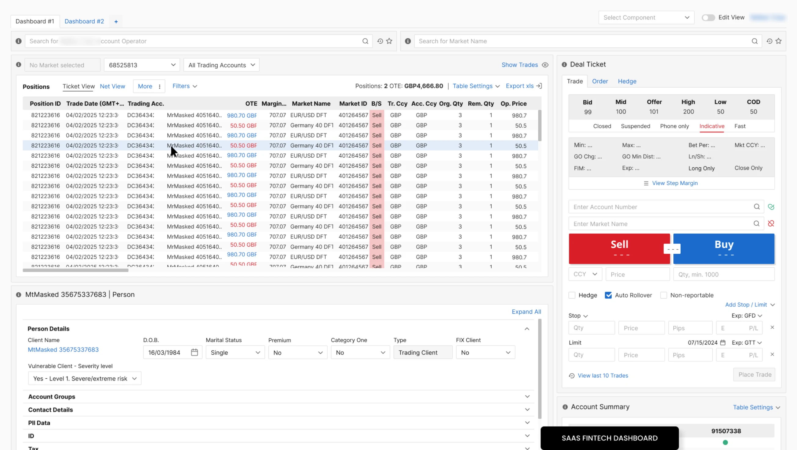
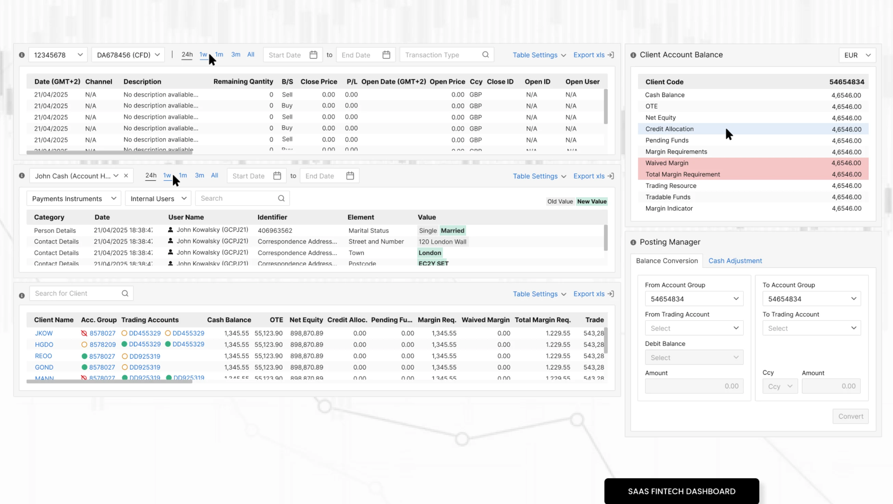

Case Study: Configurable Operator Dashboards
Case study · Enterprise B2B SaaS · Fintech
UX/UI Case Study · Enterprise B2B SaaS · Fintech
Case Study: Configurable dashboards for operators of
Forex brokerage platforms (SaaS model)
Replacing system-wide search with multiple contextual dashboards - created by users themselves according to their own needs, preferences, and expectations - that provide access to related data (partially in real time) within a single view, eliminating the need to switch between screens.

Challenge & Discovery
Operators were hunting for related data across the whole system
The problem
The platform had no unified tool for managing data. To answer one question about a client, operators jumped between separate modules - accounts, open positions, balances, profiles, permissions - and assembled the picture themselves. There was no single, consistent “source of truth.”
Business goal
- Faster task completion for back-office operators
- Less time spent searching, fewer view switches
- A better daily experience for people who live in the tool 8 h / day
Who I designed for
Internal operators managing the broker's offer for retail and professional Forex traders
Core need: as much data as possible in one view, no switching between screens, maximum density, more data, less empty space.
- Operator interviews
- PO, BA & management interviews
- Functional analysis of data-heavy SaaS competitors
- Usability testing
No two operators need the same view
Roles and daily tasks call for different data combinations - any fixed layout would fail most of them.
Context switching is the real cost
Related data lived in separate modules. Time went into finding it, not analysing it.
Density beats whitespace
On four large monitors, operators value more rows and columns over consumer-style spacing.
Solution
A workspace operators assemble themselves
Instead of designing one “perfect” dashboard, I designed the system for building dashboards: a library of widgets, one shared widget anatomy and an edit mode - so each operator decides what they see first.
Unlimited thematic dashboards
Each dashboard (tab) relates data around one topic; operators switch between them using tabs, which can be renamed and reordered.
Edit mode + widget library
Enable edit mode, select a component, and place it. Adjust its size and position. Operators shape their own workspace.
One widget anatomy
Views, filters, column settings and xls export sit in the same place in every widget - learn once, use everywhere.
Act in context
The deal ticket (trade, order, hedge) sits next to the positions it affects.
Linked data, one view
Widgets are linked thematically and functionally, so the client profile, positions and balances appear together.
Key design decisions
Dense by design, predictable everywhere

Time-range presets
24h · 1w · 1m · 3m · All in one click; a custom date range only when needed.
Consistent table controls
In every table, the column settings and the option to export to an XLS file are located in the same corner. Users can configure their own view.
Audit trail as a visual diff
Changes to client data show old vs new value side by side, with who changed it and when.
Risk signals stand out
Margin-critical lines are highlighted, so they are spotted at a glance on a dense screen.
Design system
Built by me from scratch for the whole platform: tokens, components and data-table patterns.
Accessibility
Fully compliant with WCAG 2.2.
Fluid layout
No mobile version - a deliberate design choice, necessitated by the need to manage a vast amount of data (part of which is in real time).
Constraints
Front-end framework limitations and Forex market regulation.
Outcomes & Reflection
Shipped, adopted and measurably faster
What operators said after launch
“Finally I can work in a modern layout that makes data analysis easier.”
“Now I have everything I need at hand.”
“I don't waste time looking for data anymore.”
Delivery & scope
Fully implemented in production. Day-to-day collaboration with developers, testers, business analysts and the Product Owner in Scrum.
What I learned
The functional and regulatory demands of fintech, and how to design enterprise dashboards that stay usable with thousands of records on screen.
What's next
A UI refresh: modernise the visual layer after five years, while keeping the UX that has proven itself in daily use.